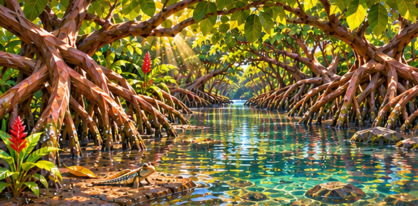
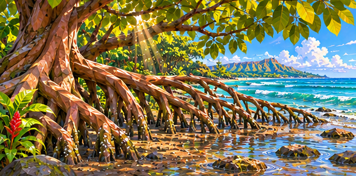
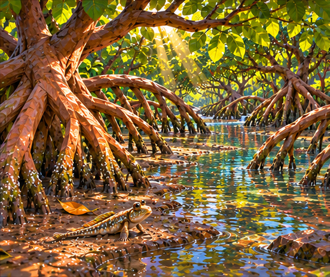
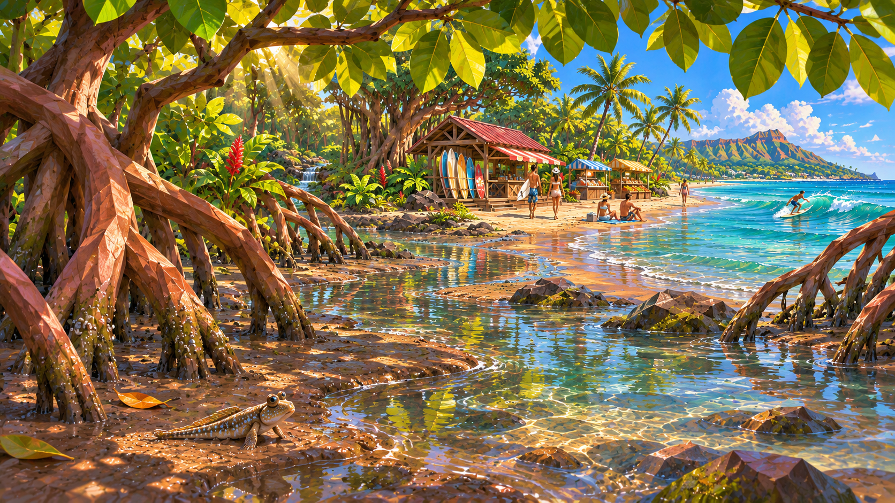
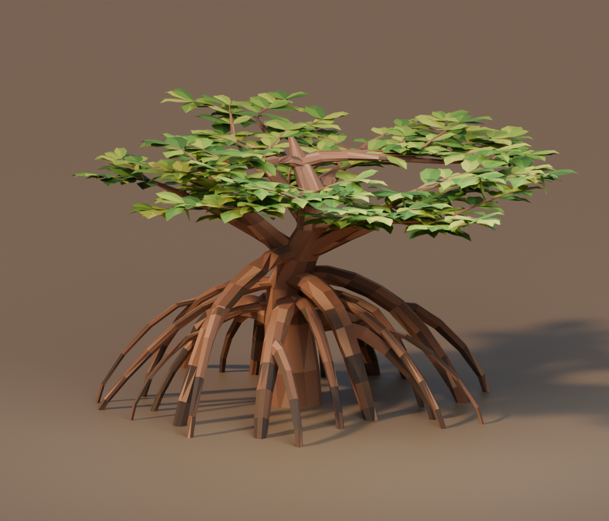
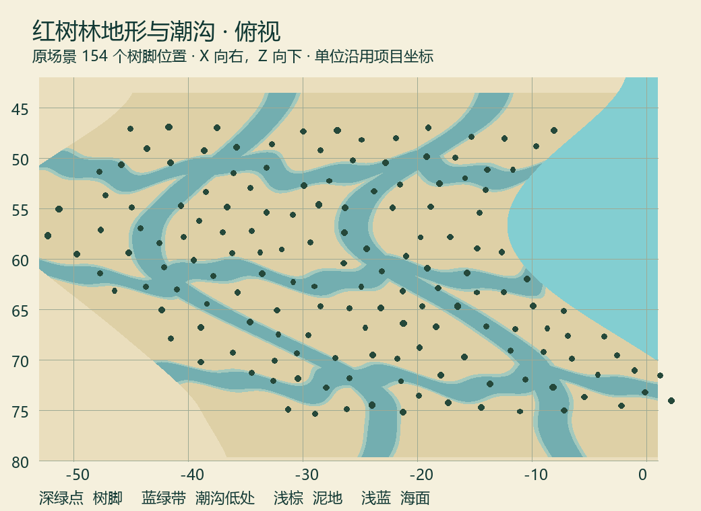

01 海滩总览
锁定岸线与山体轮廓，再核对冲浪店、沙滩集市及红树林在总场景中的相对位置。
02 潮线
制作干沙、湿沙和浅水三段过渡。用低机位检查波沫边缘、透明度和退浪后的湿沙反光。
03 冲浪浪区
用沿岸看浪与贴水侧视分别确定浪脊形状、浪面倾角、浪花范围和冲浪板尺度。


04 哈瑙马湾
先根据现有关卡的弧形岸线和两端湾岬放样，再做水深渐变、可见礁斑与坡面。
05 沙滩集市
从总览定摊位轮廓及入口，地面机位检查各摊正面与可通过的沙地。
06 热带水果摊
先建木柱、顶棚、柜台和浅木箱。水果按品种成组摆上台面，给台面前方留出视线和停留位置。
07 海滩小吃摊
明确檐布、柜台、点单面与后方收纳。侧视核对台面厚度、木构件交接和杯盘比例。
08 冲浪店内
从入口定通道和主要家具，近景落实板架、冲浪板支撑和屋架，按现有出入口对接沙地。


09 红树林
先定沟口、潮沟沟底和各树脚标高。逐条描出主根从树干到入泥的路径，侧视复核根之间的高低交错。泥岸近景用于定位弹涂鱼。
     


10 椰林
以沙径为定位基准，交错安排倾斜椰干、低层阔叶植物和树冠投影，核对行走净空。


11 丛林溪流
先确定岩阶和池底高差，再逐段连接水面。原场景视点的 Z 锚点沿 streamZ 曲线计算。


12 石像守卫
用正面确定雕刻和主轮廓，侧面补足厚度、底座和石像与坡面的接触。


13 林地瞭望点
先还原山脊和视线开口，把近处枝叶、中景林坡、远处海湾分开建模。


14 潜水区
用海床高差与水面分层定位礁石和小鱼。分别检查平视能见度和仰视水面的焦散与折射。